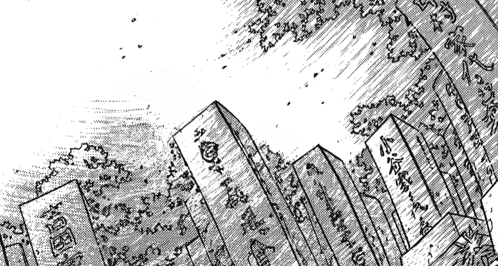

J’étais en 2. année de collège quand papa a disparu. Il est, parti subitement sans laisser de traces, on n'a jamais su pourquoi.


Sans trop savoir comment, je me suis retrouvé dans le temple de Genzen.


Devant sa tombe, une nouvelle fois j'ai demandé...

“Maman...As-tu été heureuse?”
